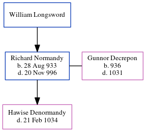

Richard I Normandy 933 - 996
[ Home ] | [ Calendar ] | [ Surnames Index ] | [ Census Index ] | [ Family History ]The child of William Longsword, Richard Normandy, the 30 times great-grandfather of Michele Copp (née Phillips), was born in Fecamp, Seine Inferieure, Normandy, France on Jun 6, 20241 and married Gunnor Decrepon (with whom he had 1 child, Hawise) in Fécamp, Seine-Maritime, Haute-Normandie, France, which is also where he died on Jun 6, 20241.
Parents
Citations
- Millennium File Online publication - Provo, UT, USA: The Generations Network, Inc., 2003.Original data - Heritage Consulting. The Millennium File. Salt Lake City, UT, USA: Heritage Consulting.Original data: Heritage Consulting. The Millennium File. Salt Lake City, UT, USA
Family Tree
Generated by ged2site. Last updated on Jun 6, 2024